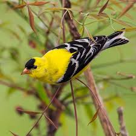

AMERICAN GOLDFINCH FACTS

Physical Traits
Small body
Bright yellow (male in summer)
Black wings and cap
Habitat
North America
Fields and gardens
Often near feeders

Diet
Eats seeds
Loves sunflower seeds
Feeds in flocks
Bright yellow songbird with seasonal color changes

Small body
Bright yellow (male in summer)
Black wings and cap
North America
Fields and gardens
Often near feeders
Eats seeds
Loves sunflower seeds
Feeds in flocks
Changes color—bright in summer, dull in winter.
Breeds later than most birds when seeds are abundant.